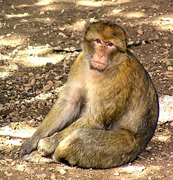
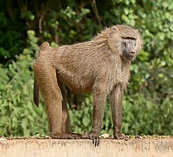
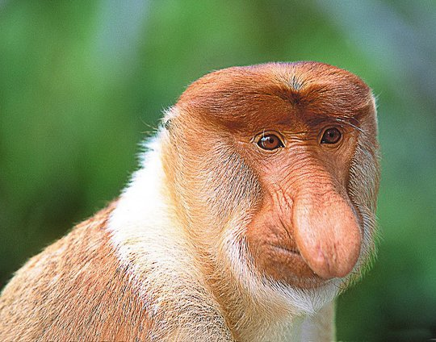

კაპუცინი (ლათ. Cebus) — მაიმუნების გვარი კაპუცინისებრთა ოჯახისა. კუდის ბოლო მესამედი მოსაჭიდებელია, რითაც ცხოველი ხის ტოტზე ეკიდება. გვხვდება ცენტრალურ და სამხრეთ ამერიკაში. ბინადრობს ტყეში. იკვებება ხილით, ფოთლებით, მწერებით, ფრინველების კვერცხითა და ბარტყებით. ყველაზე ცნობილია თეთყელა კაპუცინი (Cebus capucinus) და მურა კაპუცინი (Cebus apella). ზოოპარკში კარგად მრავლდებიან.
მაკაკი (Macacus) — ცხვირვიწრო მაიმუნების გვარი ანთრისებრთა ოჯახისა. აქვთ საჯდომი კორძები. მათი სხეულის სიგრძე 34-65 სმ, კუდი — 5-70 სმ, მასა 3,5-18 კგ აღწევს. ცნობილია 12 სახეობა, რომელთაგან მაგოტი გვხვდება გიბრალტარზე, მაროკოში, ალჟირსა და ტუნისში, ხოლო დანარჩენი — სამხრეთ აზიაში. ბინადრობენ მიწაზე ან ხეებზე. იკვებებიან მცენარეთა ნაყოფით, ზოგი ჭამს კიბოებს, მოლუსკებს, მწერებს. ცხოვრობენ ჯოგებად შობენ თითო ნაშიერს.
ანთრისებრნი (ლათ. Cercopithecidae) — ოჯახი ცხვირვიწრო მაიმუნების ქვერიგისა. გავრცელებულია აფრიკასა და აზიაში, როგორც გამონაკლისი — გიბრალტარში. ანთრისებრთათვის დამახასიათებელია ლოყის უკანა პარკები, რომლებშიც ისინი დროებით ინახავენ საკვებს. იკვებებიან უმთავრესად მცენარეთა ნაყოფითა და ყლორტებით, ჭამენ პატარა ცხოველებსაც. უმეტესობა ხეებზე ბინადრობს, გვხვდებიან ხროვებად. მნიშვნელოვანი გვარებია: ანთარი, მაკაკი, პავიანი, ჰუსარი და სხვა.
ცხვირა მაიმუნი (Nasalis larvatus) — ძუძუმწოვარი ცხოველი ანთრისებრთა ოჯახისა. მისი სხეულის სიგრძე 55-75 სმ, მასა 12-24 კგ აღწევს. აქვს ძალზე გრძელი ცხვირი (აქედან სახელწოდება), რომელიც უფრო განვითარებული აქვს მამალს. ცხვირა მაიმუნის ბეწვი ხშირია. თავი, მხრები, ზურგი და კიდურების ზედა ნაწილები აგურისფერ-წითელია, სხეულის დანარჩენი ნაწილები — მონაცისფრო. გავრცელებულია კუნძულ კალიმანტანზე. ცხოვრობს ტყეში, მეხეური ცხოველია, იკვებება უმთავრესად ფოთლებით, ნაყოფით. კარგად ცურავს. ქმნის 20-მდე ინდივიდისაგან შემდგარ ხროს.
.webp)
ანთარი (Cercopithecus) — ცხვირვიწრო მაიმუნების გვარი ანთრისებრთა ოჯახისა. ცნობილია ასზე მეტი სახეობა. კიდურები და კუდი გრძელი აქვს, ლოყის უკანა პარკები — მცირე ზომისა. გავრცელებულია აფრიკაში, უმთავრესად ტროპიკებში. ცხოვრობს ჯუნგლებში. უმეტესად ხეებზე ბინადრობს. იკვებება მცენარეთა ნაყოფითა და ნორჩი ყლორტებით. საყურადღებოა თეთრწვერა დიანა (Cercopithecus diana), წითელმუცელა ანთარი (Cercopithecus erythrotis), ეთიოპიის ტყეების ბინადარი მწვანე ანთარი (Cercopithecus sabaeus) და სხვა.